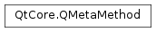

QMetaMethod¶
Synopsis¶
Functions¶
- def
__eq__(, m2) - def
__ne__(, m2) - def
access() - def
enclosingMetaObject() - def
invoke(object, connectionType, returnValue[, val0=QGenericArgument(nullptr)[, val1=QGenericArgument()[, val2=QGenericArgument()[, val3=QGenericArgument()[, val4=QGenericArgument()[, val5=QGenericArgument()[, val6=QGenericArgument()[, val7=QGenericArgument()[, val8=QGenericArgument()[, val9=QGenericArgument()]]]]]]]]]]) - def
invoke(object, connectionType[, val0=QGenericArgument(nullptr)[, val1=QGenericArgument()[, val2=QGenericArgument()[, val3=QGenericArgument()[, val4=QGenericArgument()[, val5=QGenericArgument()[, val6=QGenericArgument()[, val7=QGenericArgument()[, val8=QGenericArgument()[, val9=QGenericArgument()]]]]]]]]]]) - def
invoke(object, returnValue[, val0=QGenericArgument(nullptr)[, val1=QGenericArgument()[, val2=QGenericArgument()[, val3=QGenericArgument()[, val4=QGenericArgument()[, val5=QGenericArgument()[, val6=QGenericArgument()[, val7=QGenericArgument()[, val8=QGenericArgument()[, val9=QGenericArgument()]]]]]]]]]]) - def
invoke(object[, val0=QGenericArgument(nullptr)[, val1=QGenericArgument()[, val2=QGenericArgument()[, val3=QGenericArgument()[, val4=QGenericArgument()[, val5=QGenericArgument()[, val6=QGenericArgument()[, val7=QGenericArgument()[, val8=QGenericArgument()[, val9=QGenericArgument()]]]]]]]]]]) - def
invokeOnGadget(gadget, returnValue[, val0=QGenericArgument(nullptr)[, val1=QGenericArgument()[, val2=QGenericArgument()[, val3=QGenericArgument()[, val4=QGenericArgument()[, val5=QGenericArgument()[, val6=QGenericArgument()[, val7=QGenericArgument()[, val8=QGenericArgument()[, val9=QGenericArgument()]]]]]]]]]]) - def
invokeOnGadget(gadget[, val0=QGenericArgument(nullptr)[, val1=QGenericArgument()[, val2=QGenericArgument()[, val3=QGenericArgument()[, val4=QGenericArgument()[, val5=QGenericArgument()[, val6=QGenericArgument()[, val7=QGenericArgument()[, val8=QGenericArgument()[, val9=QGenericArgument()]]]]]]]]]]) - def
isValid() - def
methodIndex() - def
methodSignature() - def
methodType() - def
name() - def
parameterCount() - def
parameterNames() - def
parameterType(index) - def
parameterTypes() - def
returnType() - def
revision() - def
tag() - def
typeName()
Detailed Description¶
The
PySide2.QtCore.QMetaMethodclass provides meta-data about a member function.A
PySide2.QtCore.QMetaMethodhas aPySide2.QtCore.QMetaMethod.methodType(), aPySide2.QtCore.QMetaMethod.methodSignature(), a list ofPySide2.QtCore.QMetaMethod.parameterTypes()andPySide2.QtCore.QMetaMethod.parameterNames(), a returnPySide2.QtCore.QMetaMethod.typeName(), aPySide2.QtCore.QMetaMethod.tag(), and anPySide2.QtCore.QMetaMethod.access()specifier. You can usePySide2.QtCore.QMetaMethod.invoke()to invoke the method on an arbitraryPySide2.QtCore.QObject.
-
class
PySide2.QtCore.QMetaMethod¶ -
class
PySide2.QtCore.QMetaMethod(QMetaMethod) Parameters: QMetaMethod – PySide2.QtCore.QMetaMethod
-
PySide2.QtCore.QMetaMethod.Access¶ This enum describes the access level of a method, following the conventions used in C++.
Constant Description QMetaMethod.Private QMetaMethod.Protected QMetaMethod.Public
-
PySide2.QtCore.QMetaMethod.MethodType¶ Constant Description QMetaMethod.Method The function is a plain member function. QMetaMethod.Signal The function is a signal. QMetaMethod.Slot The function is a slot. QMetaMethod.Constructor The function is a constructor.
-
PySide2.QtCore.QMetaMethod.access()¶ Return type: PySide2.QtCore.QMetaMethod.AccessReturns the access specification of this method (private, protected, or public).
Note
Signals are always public, but you should regard that as an implementation detail. It is almost always a bad idea to emit a signal from outside its class.
-
PySide2.QtCore.QMetaMethod.enclosingMetaObject()¶ Return type: PySide2.QtCore.QMetaObject
-
PySide2.QtCore.QMetaMethod.invoke(object, connectionType, returnValue[, val0=QGenericArgument(nullptr)[, val1=QGenericArgument()[, val2=QGenericArgument()[, val3=QGenericArgument()[, val4=QGenericArgument()[, val5=QGenericArgument()[, val6=QGenericArgument()[, val7=QGenericArgument()[, val8=QGenericArgument()[, val9=QGenericArgument()]]]]]]]]]])¶ Parameters: - object –
PySide2.QtCore.QObject - connectionType –
PySide2.QtCore.Qt.ConnectionType - returnValue –
PySide2.QtCore.QGenericReturnArgument - val0 –
PySide2.QtCore.QGenericArgument - val1 –
PySide2.QtCore.QGenericArgument - val2 –
PySide2.QtCore.QGenericArgument - val3 –
PySide2.QtCore.QGenericArgument - val4 –
PySide2.QtCore.QGenericArgument - val5 –
PySide2.QtCore.QGenericArgument - val6 –
PySide2.QtCore.QGenericArgument - val7 –
PySide2.QtCore.QGenericArgument - val8 –
PySide2.QtCore.QGenericArgument - val9 –
PySide2.QtCore.QGenericArgument
Return type: PySide2.QtCore.boolInvokes this method on the object
object. Returnstrueif the member could be invoked. Returnsfalseif there is no such member or the parameters did not match.The invocation can be either synchronous or asynchronous, depending on the
connectionType:- If
connectionTypeisQt.DirectConnection, the member will be invoked immediately. - If
connectionTypeisQt.QueuedConnection, aPySide2.QtCore.QEventwill be posted and the member is invoked as soon as the application enters the main event loop. - If
connectionTypeisQt.AutoConnection, the member is invoked synchronously ifobjectlives in the same thread as the caller; otherwise it will invoke the member asynchronously.
The return value of this method call is placed in
returnValue. If the invocation is asynchronous, the return value cannot be evaluated. You can pass up to ten arguments (val0,val1,val2,val3,val4,val5,val6,val7,val8, andval9) to this method call.PySide2.QtCore.QGenericArgumentandPySide2.QtCore.QGenericReturnArgumentare internal helper classes. Because signals and slots can be dynamically invoked, you must enclose the arguments using theQ_ARG()andQ_RETURN_ARG()macros.Q_ARG()takes a type name and a const reference of that type;Q_RETURN_ARG()takes a type name and a non-const reference.To asynchronously invoke the
PySide2.QtWidgets.QPushButton.animateClick()slot on aPySide2.QtWidgets.QPushButton:methodIndex = pushButton.metaObject().indexOfMethod("animateClick()") method = metaObject.method(methodIndex) method.invoke(pushButton, Qt.QueuedConnection)
With asynchronous method invocations, the parameters must be of types that are known to Qt’s meta-object system, because Qt needs to copy the arguments to store them in an event behind the scenes. If you try to use a queued connection and get the error message
QMetaMethod.invoke: Unable to handle unregistered datatype 'MyType'
call
qRegisterMetaType()to register the data type before you call .To synchronously invoke the
compute(QString, int, double)slot on some arbitrary objectobjretrieve its return value:retVal = QString() normalizedSignature = QMetaObject.normalizedSignature("compute(QString, int, double)") methodIndex = obj.metaObject().indexOfMethod(normalizedSignature) method = metaObject.method(methodIndex) method.invoke(obj, Qt.DirectConnection, Q_RETURN_ARG(QString, retVal), Q_ARG(QString, "sqrt"), Q_ARG(int, 42), Q_ARG(double, 9.7));
QMetaObject.normalizedSignature()is used here to ensure that the format of the signature is what expects. E.g. extra whitespace is removed.If the “compute” slot does not take exactly one
PySide2.QtCore.QString, one int and one double in the specified order, the call will fail.Warning
this method will not test the validity of the arguments:
objectmust be an instance of the class of thePySide2.QtCore.QMetaObjectof which thisPySide2.QtCore.QMetaMethodhas been constructed with. The arguments must have the same type as the ones expected by the method, else, the behaviour is undefined.See also
Q_ARG()Q_RETURN_ARG()qRegisterMetaType()QMetaObject.invokeMethod()- object –
-
PySide2.QtCore.QMetaMethod.invoke(object, connectionType[, val0=QGenericArgument(nullptr)[, val1=QGenericArgument()[, val2=QGenericArgument()[, val3=QGenericArgument()[, val4=QGenericArgument()[, val5=QGenericArgument()[, val6=QGenericArgument()[, val7=QGenericArgument()[, val8=QGenericArgument()[, val9=QGenericArgument()]]]]]]]]]]) Parameters: - object –
PySide2.QtCore.QObject - connectionType –
PySide2.QtCore.Qt.ConnectionType - val0 –
PySide2.QtCore.QGenericArgument - val1 –
PySide2.QtCore.QGenericArgument - val2 –
PySide2.QtCore.QGenericArgument - val3 –
PySide2.QtCore.QGenericArgument - val4 –
PySide2.QtCore.QGenericArgument - val5 –
PySide2.QtCore.QGenericArgument - val6 –
PySide2.QtCore.QGenericArgument - val7 –
PySide2.QtCore.QGenericArgument - val8 –
PySide2.QtCore.QGenericArgument - val9 –
PySide2.QtCore.QGenericArgument
Return type: PySide2.QtCore.boolThis function overloads
PySide2.QtCore.QMetaMethod.invoke().This overload can be used if the return value of the member is of no interest.
- object –
-
PySide2.QtCore.QMetaMethod.invoke(object[, val0=QGenericArgument(nullptr)[, val1=QGenericArgument()[, val2=QGenericArgument()[, val3=QGenericArgument()[, val4=QGenericArgument()[, val5=QGenericArgument()[, val6=QGenericArgument()[, val7=QGenericArgument()[, val8=QGenericArgument()[, val9=QGenericArgument()]]]]]]]]]]) Parameters: - object –
PySide2.QtCore.QObject - val0 –
PySide2.QtCore.QGenericArgument - val1 –
PySide2.QtCore.QGenericArgument - val2 –
PySide2.QtCore.QGenericArgument - val3 –
PySide2.QtCore.QGenericArgument - val4 –
PySide2.QtCore.QGenericArgument - val5 –
PySide2.QtCore.QGenericArgument - val6 –
PySide2.QtCore.QGenericArgument - val7 –
PySide2.QtCore.QGenericArgument - val8 –
PySide2.QtCore.QGenericArgument - val9 –
PySide2.QtCore.QGenericArgument
Return type: PySide2.QtCore.boolThis function overloads
PySide2.QtCore.QMetaMethod.invoke().This overload invokes this method using the connection type
Qt.AutoConnectionand ignores return values.- object –
-
PySide2.QtCore.QMetaMethod.invoke(object, returnValue[, val0=QGenericArgument(nullptr)[, val1=QGenericArgument()[, val2=QGenericArgument()[, val3=QGenericArgument()[, val4=QGenericArgument()[, val5=QGenericArgument()[, val6=QGenericArgument()[, val7=QGenericArgument()[, val8=QGenericArgument()[, val9=QGenericArgument()]]]]]]]]]]) Parameters: - object –
PySide2.QtCore.QObject - returnValue –
PySide2.QtCore.QGenericReturnArgument - val0 –
PySide2.QtCore.QGenericArgument - val1 –
PySide2.QtCore.QGenericArgument - val2 –
PySide2.QtCore.QGenericArgument - val3 –
PySide2.QtCore.QGenericArgument - val4 –
PySide2.QtCore.QGenericArgument - val5 –
PySide2.QtCore.QGenericArgument - val6 –
PySide2.QtCore.QGenericArgument - val7 –
PySide2.QtCore.QGenericArgument - val8 –
PySide2.QtCore.QGenericArgument - val9 –
PySide2.QtCore.QGenericArgument
Return type: PySide2.QtCore.boolThis function overloads
PySide2.QtCore.QMetaMethod.invoke().This overload always invokes this method using the connection type
Qt.AutoConnection.- object –
-
PySide2.QtCore.QMetaMethod.invokeOnGadget(gadget, returnValue[, val0=QGenericArgument(nullptr)[, val1=QGenericArgument()[, val2=QGenericArgument()[, val3=QGenericArgument()[, val4=QGenericArgument()[, val5=QGenericArgument()[, val6=QGenericArgument()[, val7=QGenericArgument()[, val8=QGenericArgument()[, val9=QGenericArgument()]]]]]]]]]])¶ Parameters: - gadget –
void - returnValue –
PySide2.QtCore.QGenericReturnArgument - val0 –
PySide2.QtCore.QGenericArgument - val1 –
PySide2.QtCore.QGenericArgument - val2 –
PySide2.QtCore.QGenericArgument - val3 –
PySide2.QtCore.QGenericArgument - val4 –
PySide2.QtCore.QGenericArgument - val5 –
PySide2.QtCore.QGenericArgument - val6 –
PySide2.QtCore.QGenericArgument - val7 –
PySide2.QtCore.QGenericArgument - val8 –
PySide2.QtCore.QGenericArgument - val9 –
PySide2.QtCore.QGenericArgument
Return type: PySide2.QtCore.boolInvokes this method on a
Q_GADGET(). Returnstrueif the member could be invoked. Returnsfalseif there is no such member or the parameters did not match.The pointer
gadgetmust point to an instance of the gadget class.The invocation is always synchronous.
The return value of this method call is placed in
returnValue. You can pass up to ten arguments (val0,val1,val2,val3,val4,val5,val6,val7,val8, andval9) to this method call.Warning
this method will not test the validity of the arguments:
gadgetmust be an instance of the class of thePySide2.QtCore.QMetaObjectof which thisPySide2.QtCore.QMetaMethodhas been constructed with. The arguments must have the same type as the ones expected by the method, else, the behavior is undefined.See also
Q_ARG()Q_RETURN_ARG()qRegisterMetaType()QMetaObject.invokeMethod()- gadget –
-
PySide2.QtCore.QMetaMethod.invokeOnGadget(gadget[, val0=QGenericArgument(nullptr)[, val1=QGenericArgument()[, val2=QGenericArgument()[, val3=QGenericArgument()[, val4=QGenericArgument()[, val5=QGenericArgument()[, val6=QGenericArgument()[, val7=QGenericArgument()[, val8=QGenericArgument()[, val9=QGenericArgument()]]]]]]]]]]) Parameters: - gadget –
void - val0 –
PySide2.QtCore.QGenericArgument - val1 –
PySide2.QtCore.QGenericArgument - val2 –
PySide2.QtCore.QGenericArgument - val3 –
PySide2.QtCore.QGenericArgument - val4 –
PySide2.QtCore.QGenericArgument - val5 –
PySide2.QtCore.QGenericArgument - val6 –
PySide2.QtCore.QGenericArgument - val7 –
PySide2.QtCore.QGenericArgument - val8 –
PySide2.QtCore.QGenericArgument - val9 –
PySide2.QtCore.QGenericArgument
Return type: PySide2.QtCore.boolThis is an overloaded function.
This overload invokes this method for a
gadgetand ignores return values.- gadget –
-
PySide2.QtCore.QMetaMethod.isValid()¶ Return type: PySide2.QtCore.boolReturns
trueif this method is valid (can be introspected and invoked), otherwise returnsfalse.
-
PySide2.QtCore.QMetaMethod.methodIndex()¶ Return type: PySide2.QtCore.intReturns this method’s index.
-
PySide2.QtCore.QMetaMethod.methodSignature()¶ Return type: PySide2.QtCore.QByteArrayReturns the signature of this method (e.g.,
setValue(double)).
-
PySide2.QtCore.QMetaMethod.methodType()¶ Return type: PySide2.QtCore.QMetaMethod.MethodTypeReturns the type of this method (signal, slot, or method).
See also
-
PySide2.QtCore.QMetaMethod.name()¶ Return type: PySide2.QtCore.QByteArrayReturns the name of this method.
-
PySide2.QtCore.QMetaMethod.__ne__(m2)¶ Parameters: m2 – PySide2.QtCore.QMetaMethodReturn type: PySide2.QtCore.bool
-
PySide2.QtCore.QMetaMethod.__eq__(m2)¶ Parameters: m2 – PySide2.QtCore.QMetaMethodReturn type: PySide2.QtCore.bool
-
PySide2.QtCore.QMetaMethod.parameterCount()¶ Return type: PySide2.QtCore.intReturns the number of parameters of this method.
-
PySide2.QtCore.QMetaMethod.parameterNames()¶ Return type: Returns a list of parameter names.
-
PySide2.QtCore.QMetaMethod.parameterType(index)¶ Parameters: index – PySide2.QtCore.intReturn type: PySide2.QtCore.intReturns the type of the parameter at the given
index.The return value is one of the types that are registered with
QMetaType, orQMetaType.UnknownTypeif the type is not registered.
-
PySide2.QtCore.QMetaMethod.parameterTypes()¶ Return type: Returns a list of parameter types.
-
PySide2.QtCore.QMetaMethod.returnType()¶ Return type: PySide2.QtCore.intReturns the return type of this method.
The return value is one of the types that are registered with
QMetaType, orQMetaType.UnknownTypeif the type is not registered.See also
PySide2.QtCore.QMetaMethod.parameterType()QMetaTypePySide2.QtCore.QMetaMethod.typeName()
-
PySide2.QtCore.QMetaMethod.revision()¶ Return type: PySide2.QtCore.intReturns the method revision if one was specified by
Q_REVISION(), otherwise returns 0.
-
PySide2.QtCore.QMetaMethod.tag()¶ Return type: str Returns the tag associated with this method.
Tags are special macros recognized by
mocthat make it possible to add extra information about a method.Tag information can be added in the following way in the function declaration:
// In the class MainWindow declaration #ifndef Q_MOC_RUN // define the tag text as empty, so the compiler doesn't see it # define MY_CUSTOM_TAG #endif ... private slots: MY_CUSTOM_TAG void testFunc();
and the information can be accessed by using:
MainWindow win; win.show(); int functionIndex = win.metaObject()->indexOfSlot("testFunc()"); QMetaMethod mm = win.metaObject()->method(functionIndex); qDebug() << mm.tag(); // prints MY_CUSTOM_TAG
For the moment,
mocwill extract and record all tags, but it will not handle any of them specially. You can use the tags to annotate your methods differently, and treat them according to the specific needs of your application.Note
Since Qt 5.0,
mocexpands preprocessor macros, so it is necessary to surround the definition with#ifndefQ_MOC_RUN, as shown in the example above. This was not required in Qt 4. The code as shown above works with Qt 4 too.
-
PySide2.QtCore.QMetaMethod.typeName()¶ Return type: str Returns the return type name of this method.
See also
PySide2.QtCore.QMetaMethod.returnType()QMetaType.type()
© 2018 The Qt Company Ltd. Documentation contributions included herein are the copyrights of their respective owners. The documentation provided herein is licensed under the terms of the GNU Free Documentation License version 1.3 as published by the Free Software Foundation. Qt and respective logos are trademarks of The Qt Company Ltd. in Finland and/or other countries worldwide. All other trademarks are property of their respective owners.